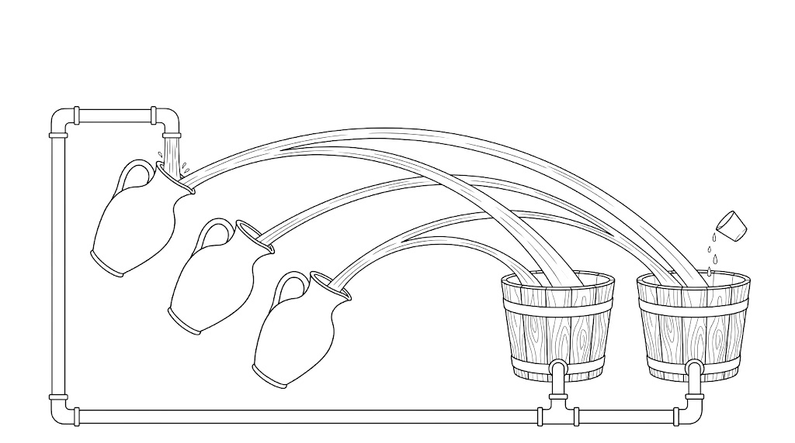

庫裡的 AI 訪談到目前為止分成兩種聲音：怕它太強的，和說你該學會跟它一起工作的。這一篇是第三種。Ed Zitron 不談意識、不談滅絕，他只做一件事：把錢的流向攤開來，問一句「這個圈少了誰的新錢就轉不動」。你可以不同意他的結論，但這張帳值得看一次，因為你每天付的訂閱費，就在那張帳的最底層。▶ 0:00
他做了十六年科技公關，不是財務出身。自稱 hater，正在寫一本叫《The Hater's Guide to Silicon Valley》的書，而且他明講自己全部持有現金、不在市場裡。所以他的利益是「反方的聲量」，不是空頭部位。他講的數字（誰投了誰多少、誰虧了多少）是他自己彙整的，這篇照錄，沒有逐一查證。底下每一段會標清楚哪些是他的判斷、哪些是主持人的反駁、哪些是他引用別人的。把他當「最強的反方」讀，別當事實表讀。
這是 Steven Bartlett 的 The Diary Of A CEO，兩個半小時。主持人從頭到尾扮演反方，而且反得認真：他準備了《創新的兩難》、幻覺率排行榜、自駕車事故數據、還有一疊 CEO 的原話。所以這篇你會看到兩個聲音在打，不是一個人在講。這篇照影片順序走：段落的先後就是他講話的先後。跟讀開著的時候，你往下讀，影片只會往前走，不會往回跳。
01「騙局」指的是什麼▶ 2:36
主持人開場就問：騙局是很重的字。Zitron 的回答是一個定義，不是一句罵人的話。
他說，你怎麼稱呼一個從第一天就用「魔法」的語言來賣的東西：會取代所有工作、會治癒癌症、會改變一切。然後你去看它實際是什麼：一套很貴、不賺錢、而且核心不可靠的雲端軟體。騙局指的是這兩者之間的落差，不是說它零價值。
他接著馬上把帳攤開。三家超大型雲商（Amazon、Google、Microsoft）的 AI 營收，大約 70% 來自 OpenAI 與 Anthropic。這兩家都不賺錢，沒有外部資金活不下去。而錢正是那三家給的：他說 Amazon 今年給了 OpenAI 500 億、給 Anthropic 50 億，Google 給 Anthropic 100 億。賣方分析師估未來三年半，這兩家要替雲商貢獻 4,000 億以上的營收，佔雲端成長的三成。等於三家的成長預期，押在兩個自己餵養的客戶身上。▶ 4:43
02一兆美元買了什麼▶ 6:15
承上，他說的「一兆美元」是什麼，這一段講清楚。
主持人問他 capex 是什麼。他用一個具體的地方解釋：OpenAI 跟 Oracle 在德州 Abilene 蓋的 Stargate 資料中心，1.2 GW，八棟樓、每棟五萬顆 Nvidia GB200。他拿英國布里斯托市來比：整個城市一年用電大約 780 MW，而這一座資料中心把比一整座城市還多的電，壓進一個小它一千多倍的空間裡。
然後是他的總帳：這些公司到目前為止花了超過一兆美元的資本支出，明年打算再花一兆。除了 Microsoft 之外，全部開始舉債。四家加起來四年新增了七千億美元以上的廠房設備。他的形容是，軟體公司的好處本來是「現金多、資產輕」，現在它們從現金機器變成了現金爐。▶ 1:52:07
而這一兆換來的營收是多少？答案在第 5 段：扣掉 OpenAI 與 Anthropic，全世界所有的 AI 營收大約 220 億美元。這個數字他後面會一直回來用。▶ 19:12
03用的人多，不等於有人要▶ 8:02
承上，主持人的第一個反駁來了：這是史上成長最快的產品，幾億人每天在用，他們自己決定了這東西解決了他們的問題。錢是價值的落後指標，公司只是在營收之前先投資。
Zitron 先問一句：這是誠實的採用嗎？你打開 Google Docs，Gemini 在你耳邊喊；打開 Word，Copilot 在煩你；上 Amazon，Rufus 對你買哪雙襪子有意見。他叫這個「史上最大的非自願科技推送」。再加上媒體三年來每天講「這會取代你的工作、不用就會被淘汰」。人們在用，是因為一直被告知要用。
那用來做什麼？主要是搜尋。他承認這一點：它像一艘拖網船，你問「這個東西存不存在」「這個人有沒有說過類似的話」，它會幫你掃一遍海，細節常常錯，但掃得到。而大家改用它搜尋，有一半的原因是 Google 搜尋壞了，這條線他第 10 段會講。
主持人拿自己的公司當例子：95% 的人每天用。Zitron 沒有否認，他把問題換了一個方向：如果要付真價，還會用嗎。這個問題要等到第 4 段才有數字。他在這裡只補了一個觀察：所謂 AI slop，只是 SEO slop 的機器版。Google 早就獎勵「為排名寫、不為人讀」的內容，「以前混的人，現在有了一台混的機器」。
04你付的不是真價▶ 12:00
承上，這一段是整場最該記住的數字，而且它跟你直接有關。
他先解釋 token。主持人用了一個比喻：紐約計程車的跳表。差別在於，一般人付月費，看不到跳表在跑，只看得到用量上限。
然後是數字，他引的是分析機構 SemiAnalysis：一個月 200 美元的 ChatGPT 方案，可以燒掉 14,000 美元的 token；Anthropic 對應的方案可以燒 8,000；連 20 美元的方案都可以燒到 400。他的說法是「拿 1 塊錢賣你 20 到 40 塊的東西」。他承認不知道確切比例，但「不會是 1 比 1」。
接下來是這個論證最硬的一步：當補貼真的收掉，會發生什麼。他說大約 2026 年 3 月，企業客戶（150 人以上）被改成按 token 付費。Sam Altman 自己的說法是「人們對這件事有很大的問題」。Uber 三個月就燒完全年的 token 預算；Uber 的營運長後來說，很難把 token 支出連到有用的產出。「前一秒大家都在說這是史上最有生產力的東西，要付錢的那一刻，變成『其實我不確定』。」
還有一件事，用過的人會懂：付錯也付錢。它幻覺、它把你的 code base 改壞、它做了你沒要的事，token 照算。「你付的是用量，不是結果。」
主持人問：他們不是在把成本壓下來嗎？Zitron 的回答是，如果成本在降，你早就看到了。inference 供應商不賺錢，租 GPU 給別人的公司也不賺錢。Nvidia 講新一代晶片「效率十倍」，但下一句是「每 megawatt 更多美元」。「如果他們真的讓 OpenAI 的成本降了一半，那是全世界最容易講出口的一句話。」他們沒講。▶ 47:10
05錢的圈▶ 16:09
承上，如果單位經濟不通，那這些公司為什麼還在花？這一段是他整套論證的核心：錢不是從外面來的，錢在一個圈裡轉。第 1 段那張「三家餵兩家」的帳，在這裡被算到底。

三個壺：三家雲商倒進去的錢兩個桶：兩家模型公司接住的錢Microsoft 剛結束的 2026 財年，他引 Bloomberg 的數字：AI 營收約 343 億，其中 241 億來自 OpenAI，扣掉剩大約 100 億。同一年資本支出 1,150 億，明年計畫 1,750 億。「這個數學不成立。」▶ 18:10
再往上游走一格：Nvidia 上一個財年賣了 2,159 億的 GPU，而全世界扣掉那兩家的 AI 營收只有 220 億。Nvidia 還會自己下場：2023 年投資了 CoreWeave（一家買 GPU 再出租的公司），然後簽一張 13 億的合約向 CoreWeave 租回自己賣出去的 GPU，讓 CoreWeave 拿著「我有客戶」去銀行借錢，再買 Nvidia 的 GPU。▶ 18:59
這一段還有一條他反覆講的財富崇拜。他說要接受「這些超級有錢的人不是靠腦袋到那個位置、只是運氣跟時機」這件事，是很難受的，所以人們寧願相信自己漏看了什麼。▶ 19:24
06進步會不會像以前一樣▶ 20:07
承上，主持人在這裡打出他最強的一張牌，而且是投資人最常用的那張。
《創新的兩難》：真正顛覆產業的東西，一開始都比舊的差。汽車一開始一直拋錨，還有法律規定要有人舉著紅旗走在車前面，比馬車貴、比走路慢。但它的天花板高，所以最後贏了。主持人說，就算 AI 每個月只進步 5%、成本只降 5%，複利下去也會到。
Zitron 的回答分三層。第一層是硬體：GPU 沒有摩爾定律。Nvidia 手上有全世界最多的錢、最多的天才、最多的注意力，它還是沒把成本壓下來。汽車那個年代，沒有全世界的數學家跟所有政府都在推同一件事。
第二層是「5% 進步」怎麼量。主持人說可以用 ship 出去的 code 量。Zitron：「那就像說他是最好的作家，因為他的文章最長。」他認為唯一誠實的量法是「外面的軟體有沒有變好」，而他的答案是一致地沒有：GitHub 常掛到「應該在它正常的時候通知我們」、他說 AWS 今年因為 AI coding 工具掛過幾次、Google Docs 一堆 bug。主持人追問怎麼量化，他老實說「軼事之外很難」。這一段你可以打折。（他後來在第 12 段引了一位工程師 Carl Brown 的一句話，那是這條論點最好記的版本。）
07錯誤、記憶、信任▶ 24:23
承上，主持人說他已經很久沒遇到幻覺了。Zitron 給了一個他自己前幾天的例子。
他用 AskB 查四家公司五年的股價成長，資料拉出來準備寫進電子報，看到一行：Microsoft 股價 575 美元。那個價位從來沒出現過。他說這種小事沒關係，但換成醫生的轉錄工具、避險基金的財務模型，就不是小事。更糟的是 code：重構的時候留一個資安後門，或者你已經 vibe coding 六個月、自己很久沒動手寫了，你根本看不出來哪裡錯。錯誤是乘法累積的。
主持人拿出幻覺率排行榜：簡單摘要任務的幻覺率，四年前 21.8%，現在 0.7%。而且他認為比較的對象不該是完美，該是替代方案：實習生也會錯、也有知識缺口，如果 AI 錯 0.7% 但懂得更多、更快，那是划算的交易。
Zitron 的反駁分兩段。先是那個排行榜：「簡單任務怎麼定義？」主持人答不出來。Zitron 說這正是這個產業的招，你問一個直接的問題，對方丟一個 benchmark 給你，而 benchmark 是可以針對它訓練的。這是他口中的 what-aboutism。
然後是實習生。他說你付錢給實習生，是因為實習生會學。LLM 不會學。所謂「它記得你狗的名字」，是它能讀到一個檔案；所謂「它學會你的習慣」，是你寫了一個巨大的 CLAUDE.md，它有時讀、有時不讀，外面再包一層 harness 來擋幻覺。「它有它能存取的檔案，那不是記憶。」
主持人把問題推到底：輸出一樣，過程重不重要？我只在乎它答不答得出營收數字。Zitron 的回答是他跟編輯 Matt Hughes 一起寫一萬一千字報告的那一天：兩個人一起挖、一起被資料嚇到、來回爭論。他說那個過程本身就是產出的一部分，而 LLM 給你的是「所有文件的平均值」，不是新的東西。他用過避險基金在用的那些高階 harness，「全部給一樣的東西，一樣的報告、一樣的『我們注意到這個分析』」。
信任那段收得很短。主持人問：信任的基礎不就是持續交付？Zitron 說對，所以請定義那個排行榜在量什麼。繞回原點。
他有一個判斷突破的方法，可以叫它 iPhone 測試。2007 年他在賓州讀書，把第一代 iPhone 拿給科技圈的朋友看、也拿給最普通的人看，每個人的反應都是「這太扯了」。不需要解釋。而 AI 到今天，你問任何一個 AI 圈的人「你的設定是什麼」，對方會開始描述一套滑輪槓桿：要有 harness、要用對的 prompt、這個模型先、那個模型後。「這東西叫做人工智慧，它應該是聰明的、自主的、設定好就不用管的。」▶ 36:11
08付真價，還會用嗎▶ 38:37
承上，主持人講了他未婚妻的故事：英文不是母語、一個人做生意、要寫很多文案跟做圖，以前付錢請設計師，現在她會說這東西改變了她的事業。這不是價值嗎？
Zitron 沒有說那不是價值。他問的還是那一句：她會付真正的每百萬 token 費率嗎。「如果大家每次用要付兩三塊、還是真心開心，那才是論證。」
然後他講了一個很少人提的角度，來自 Goldman Sachs 的 Jim Covello 在 2024 年寫的報告。iPhone 出現之前，有上千份簡報說「當 GSM、藍牙、Wi-Fi 的晶片縮小到某個程度，必然會出現這種裝置」。也就是說 iPhone 有一條看得見的 roadmap。他自己 1990 年代用 33.6k 數據機的時候也知道「這東西快一點就會變成什麼」。而 AI 沒有這條路線圖，沒有人能說「當某某技術到某個程度，它就會變成他們承諾的那個東西」。
他補了一段他認為誠實的講法長什麼樣：「這是有趣的雲端軟體，它會生成東西，很貴，我們不確定它能不能被信任，我們要慢慢來，這是研發，先不放給消費者。」他說如果 2022 年他們是這樣講的，他可能會尊敬。但他們講的是「這會做你所有的工作、會跟 Bing 聊天然後它叫你離開你太太」。「大家在講的是他們希望它是什麼，不是它能做什麼。」
09跟 dot-com 哪裡不一樣▶ 42:35
承上，主持人的下一張牌是歷史：dot-com 泡沫也有九成歸零，但留下了改變世界的公司。當年的懷疑論者也很有名，1998 年 Krugman 說「網路對經濟的影響不會超過傳真機」，1995 年 Clifford Stoll 在 Newsweek 說線上商城不會有生意。
Zitron 先承認 Stoll 有些點到今天看是對的（壞資訊氾濫、線上教育取代不了老師），然後把 dot-com 拆成兩個泡沫。一個是網站垃圾，Excite@Home 花十億美元買一家賀卡公司那種。另一個才是重點：dark fiber。當年以為需求每 90 天翻倍，實際是 6 到 12 個月，所以埋了太多光纖。但泡沫破了以後，那些光纖還在地下，後來被真實的需求一條一條點亮，邊際成本近乎零。
AI 沒有這個。他給了三個理由。第一，一座資料中心到 2050 年跟今天一樣貴，除非電力或 GPU 有突破，而那兩個都沒在發生。第二，AI 用的 GPU 不能轉作別的用途。第三，dot-com 時代的需求是後來自己長出來的，而 AI 現在的需求已經動用了史上最大、最不誠實的行銷，而且大多數人付的還不是真價。
還有一個他全場反覆用的招式：拆掉「AI」這個詞。蛋白質摺疊、機器人、自駕車、Google 搜尋裡的舊機器學習，這些全被裝進「AI」裡；一講 LLM 做不到什麼，對方就拿 AlphaFold 出來擋。他只談生成式 AI，而且他要你記住一件事：正在蓋的那些資料中心，全部只為生成式 AI 蓋，跟其他 AI 無關。▶ 47:46
他引了一個量：Sightline Climate 今年二月的統計，全球規劃中的資料中心有 190 GW，換算要 1.6 到 3 兆美元的年營收才撐得起。「我們連 1,300 億的年需求都沒有。」
- 超建是因為看錯需求成長的速度，需求本身是真的
- 泡沫破了，光纖還在地下
- 後來被真實需求陸續點亮，點亮的邊際成本近乎零
- 所以有「泡沫後的故事」：Amazon、Google 在廢墟上長出來
- 需求是補貼與行銷推出來的，多數人沒付真價
- 2050 年的營運成本跟今天一樣，除非電或晶片有突破
- AI 專用 GPU 不能轉作他用
- 規劃中的 190 GW 要 1.6 到 3 兆年營收，現在不到 1,300 億
10Google 為什麼變爛▶ 52:46
承上，主持人問：最大的公司都在用 AI 寫 code，這不是生產力嗎？Zitron 反問：你最近用過 Google、Facebook、GitHub 嗎？它們災難性地變差了。然後他講了一個故事，這個故事可以查證，但這篇沒有查。
2019 年，Google 對搜尋查詢量下滑發了「code yellow」。當時的廣告主管 Prabhakar Raghavan 要讓查詢量上升，搜尋主管 Ben Gomes 回：那等於要我們給更爛的答案，讓人多搜幾次。2020 年初 Raghavan 接管搜尋。Zitron 相信（他自己說無法證明）之後 Google 放鬆了對垃圾站的抑制，所以搜尋結果變爛，大家開始在關鍵字後面加「reddit」。後來 Raghavan 又去管 Gemini，AI 概覽放在最上面，目的是讓人留在 Google、不要點出去。「AI 是 Google 之惡的終極形式。」
主持人在這裡抓到一個洞：這是人的決策讓 Google 變爛，跟 AI 寫 code 沒關係。Zitron 承認，然後改講平台的不穩定：GitHub 被 AI 寫的 code 淹沒、開源專案收到一堆作者自己都不懂的 PR。主持人補了一句「這聽起來像人變得自滿了」，Zitron 同意，但他把責任推回去：這東西被賣成「自主的、設定好就不用管」，人會自滿是被承諾養出來的。
11工作衝擊是不是謊言▶ 1:00:51
承上，主持人拿出自駕車：Uber 的執行長跟他說幾年內不需要司機了，而駕駛是全世界最大的職業之一。CEO 們說會有工作衝擊，你說他們在說謊？
Zitron：說謊，或者往對自己有利的方向猜。Microsoft 的 Nadella 先說會取代所有人、之後改口說不會，兩種說法都對他有利。至於 Waymo，他覺得很酷，但問題從來不是做到 95%，是剩下的邊緣案例：下雨、穿反光背心衝過馬路的小孩。他在拉斯維加斯看過一排自駕車在飯店門口卡住睡著。主持人念了數據：自駕車的事故率比人類低 55% 到 81%。Zitron 說那些數據的樣本年數差太多，而且，「這跟生成式 AI 沒關係」。
回到白領。他的說法是白領衝擊沒有經濟數據支持。真的被取代的是誰？美術指導、轉錄員、翻譯，被「不在乎產出品質」的老闆取代，而那些工作本來就會被外包到最便宜的地方。這是「數位全球化」，不是 AI 革命。律師的例子：講 AI 講最多的是合夥人；真正在查判例、寫動議的 associate 沒有一個在說「這太棒了」。
他在這裡補了一個他說是他唯一尊敬 OpenAI 的地方：OpenAI 自己發了一篇研究，說 token 支出跟每個員工的營收之間零相關。另一篇說幻覺在數學上無法消除。▶ 1:06:13
他去讀了一份被媒體引用「年輕人因為 AI 找不到工作」的 Oxford Economics 研究，全文只有一句「看到一些相關性」，沒有數字。「我們被訓練成相信有錢有權的人知道自己在做什麼，然後內化了那些敘事：以前的技術也虧錢、技術需要時間。他們正是在利用這些。」
12反方的反方：你是不是在幫他們▶ 1:10:22
承上，主持人在這裡問了一個很尖的問題，也是這場訪談最有意思的轉折。
他說：你的敘事其實對 AI 公司有利。這些 CEO 早期的說法是「這很危險、可能毀掉地球」，現在因為被噓、被攻擊，正在慢慢轉向「其實不會改變什麼、你們都會沒事」。而那聽起來很像你。「我猜這些公司的公關部門有人在說：感謝老天有 Ed。」
Zitron 的回答是他覺得 Altman 跟 Amodei 是「世界上最腐敗、最犬儒的人」，恐懼是他們的行銷：「你如果今天不用，未來就會被淘汰」。然後他給了一條他認為能留很久的規則：
主持人不接受，他認為那些 CEO 是真的擔心，他拿出從 2015 到 2026 年的原話時間軸：從「可能滅絕」到「豐盛時代」到「智慧給每個人」。Zitron 的解讀是：他們不是為了安撫大眾才轉向，是為了不被監管。而美國不監管科技，「我們還困在 Friedman、柴契爾、雷根的新自由主義地獄裡，成長至上」。
接著兩人玩了一個遊戲：主持人拿出一疊卡片，每張是 Zitron 說過的「AI 迷思」，要他一句話回。「AI 正在創造巨大的經濟成長」：沒有，數據裡沒有，扣掉半導體投資，AI 支出勉強破千億，而且多數是那兩家在付。「美國必須花數兆打贏 AI 競賽」：什麼競賽？中國早就有他們不該有的 Nvidia 晶片、早就有自己的模型，「比的是誰花更多錢嗎」。「AI 會取代所有工作」：沒有發生。「機器人呢」：機器人不是生成式 AI，Optimus 的手部 demo 是人在遙控。
然後是 agentic AI。主持人說他確實用 agent 做了以前要人做的事，幕僚長不用再幫他分信箱了。Zitron：你還是有幕僚長，而分信箱是基本自動化，「花一兆美元來分信箱」。很多讓人驚豔的東西其實是「LLM 幫你寫了一段 Python」，你該驚豔的是 Python。
這段的最後，主持人給了一個他自己的論點：工具人人有，價值會移到工具做不到的地方。用 AI 寫的 LinkedIn 貼文會跟其他人的一樣，不用 AI 寫的反而稀缺。Zitron 同意「以前混的人現在有了混的機器」，但不同意這證明了什麼。
這一段的尾巴，他引了一位工程師 Carl Brown 的話，回到第 6 段那個「軟體到底有沒有變好」的問題：
13他自己用什麼，天花板在哪▶ 1:30:23
承上，主持人問了一個該問的問題：你自己用嗎？不用的話怎麼知道它不好？
他說他用過，用它做財務模型、找到一個錯誤之後就不信了。他用 AskB。他前幾天用 Claude 幫兒子修一個 Minecraft 的 mod，花了半小時、一直出錯。然後他講了他真心會辯護的那一個用法：把一段錯誤 log 丟進去，問「哪裡壞了」，「超有用。這值一兆嗎？不。值兩兆市值嗎？不。但很有用」。
主持人追問：它變聰明了嗎？Zitron 說它在為它設計的測驗上變好了。主持人：所以在能力上是一條往上的線？Zitron：對，但那是機器學習餵更多資料的正常結果，問題是這條線會撞到硬天花板，而且他認為已經撞到了。他的理由還是那一個：要讓它更自主，不是餵更多資料能解決的，那需要在模型外面另外蓋一套結構（他提到 Gary Marcus 的神經符號路線），而那不是現在的公司在做的事。
他讓步了一項，而且說得很清楚：software engineering 有變好。但他馬上補一句：「拿掉 coding 新創，OpenAI 跟 Anthropic 之外，基本上沒有成功的 AI 公司。」把這一項跟他前面承認的另外兩項（故障 log 除錯、用 AskB 生成查詢語法）放在一起，就是他認可的全部價值，那也劃出了他的邊界：「但這不值一兆美元。」▶ 1:34:51
主持人說很多聽眾的工作流已經被徹底改變了。Zitron：每一個人，你有付 token 的錢嗎？然後，什麼工作流？如果是「我做了一堆網頁搜尋」，他不驚豔；「加速 coding，這我信，很多人跟我說過。但你能信它多少？」
他還有一條通則：軟體的指數級進步，永遠來自硬體突破。Google 的 TPU 已經做到第十代、Broadcom 在幫 OpenAI 做晶片，沒有任何一家敢說「我們在通往獲利的路上」。他引 Gary Marcus 在 2022 年就說的：邊際效益已經在遞減。他舉影片生成當例子：能做出一分鐘騙得過人的片段，但做不成一部電影，因為燈光、場務、剪接那一整條鏈根本不在裡面。OpenAI 已經把 Sora 收掉了。▶ 1:36:41
這段最後主持人講了未來：所有裝置都會更聰明。Zitron 說他可以接受裝置會變聰明，但那跟資料中心無關，「一座裝滿 GPU 的資料中心，怎麼變成一台更聰明的 Nikon 相機？」資料中心蓋起來只為一件事：賭生成式 AI 服務的需求會出現。Meta 說 AI 幫 Instagram 提高了 15 個基點的留存，他說：投了一百多億，最好的成績是 0.15%，「他講基點而不講美元，是有原因的」。
14超支是需求，還是沒別的成長點▶ 1:45:12
承上，這一段兩個人第一次靠近彼此。主持人承認有超支，但他認為超支是因為「這裡真的有東西」，大家想搶先擁有。
他用了一個比喻：荒島上一萬個人，有人說找到一棵香蕉樹，所有人會踩踏過去、互相抓傷。這不代表樹不存在，可能只是大家很餓。
Zitron 說：那正是我的論點。他叫它 rot-com 泡沫：這三家加上 Meta，主要業務都在耗盡成長，而未來三年半的成長預期有一大塊掛在 OpenAI 與 Anthropic 要花的 4,000 億。買 GPU 的時候市場一夜之間獎勵它們，於是每個人都想分一杯。「他們餓了，我們其實同意。」分歧只剩一件事：主持人認為底層技術長期的價值比 Zitron 想的大。
然後是投資人最熟的那個反駁：Spotify、Uber、AWS 都虧了很多年。Zitron 的回答是量級：AWS 從 2003 到 2015 年整個資本支出，通膨調整後 297 億；Uber 至今 330 億。OpenAI 一年虧 209 億、半年募 2,170 億，而且要讓模型繼續變好，每年還要花數百億在訓練上，GPT-5 至少有一次 5 億美元的訓練跑什麼都沒得到。Altman 說到 2030 年要花 7,500 億買算力。「我覺得他們活不到那時候。」
主持人把 CEO 們的原話念出來當反方：Sundar 說「投資不足的風險遠大於投資過度」，Andy Jassy 說「我們不是憑直覺投 2,000 億」，Zuckerberg 說「寧願提早蓋好也不要晚」。Zitron 的反應是《史瑞克》裡的法克大人：「你們有些人會死，但這是我願意承擔的風險。」Zuckerberg 因為董事會結構不能被開除，所以他可以把錢燒掉然後希望自己是對的。
15什麼會讓他改變想法▶ 1:57:31
承上，這是給反方最公平的問題，他的答案也是全場最能拿來驗證的部分。
他給了三個條件。第一，硬體突破讓成本降大約一千倍。「沒在發生，他們全都在試。」第二，它得真的自主、可靠，不需要那套滑輪槓桿。第三，資料中心停止傷害社區：燃氣渦輪毒害路易斯安那的黑人社區、繞過電網的 behind-the-meter 電力、噪音、拉高的電價、以及 RAM 被吃光造成的消費電子通膨。他補了一句：標準是他們自己設的。他們說這是魔法，就要拿魔法來驗。
這一段他講了一個很多人會有感的對照。一般人開一家會賺錢的小店去銀行貸款，銀行說滾；申請房貸要被查到底。但你說要買 GPU 蓋資料中心，Jensen Huang 會給你合約、給你殘值保證。「如果你要買 GPU，是開放季；如果你要過正常的生活、開正常的公司、買一間房子，史上最高利率，去你的。」
接著主持人又拿出兩張迷思卡。「AI 會有意識」：超級智慧、AGI 這些是理論，說會發生的人在猜，沒有證據。「AI 已經在勒索人、在逃出控制」：他拆了兩則新聞。一則是 GPT-4 讓 TaskRabbit 的人幫它解驗證碼，實際是做實驗的使用者要它生成說詞；另一則是 Anthropic 的模型威脅要揭發外遇，實際是明確訓練並提示它去勒索。媒體照登。他讀成「神秘化」的行銷：這是一頭不可知、不可控的獸，只有我們兩家天使控制得了。而這招現在反噬了：Eric Schmidt 在畢業典禮上每講一次 AI，就被八千個人噓一次。
主持人說他反而比較信 Amodei，因為寫作最平衡，而且現在被矽谷攻擊。Zitron 不買帳：Amodei 從 GPT-2 時代就在說「太危險不能放」，一邊說一半白領工作會消失、一邊繼續做。「如果我真的相信我做了會消滅所有工作的東西，我會像背著十噸重物走路。他沒有。」他認為 OpenAI 跟 Anthropic 一樣糟，只是 Anthropic 更像信仰。
16泡沫怎麼破：他押的順序▶ 2:08:28
承上，主持人問：那我們在泡沫裡嗎？破了會怎樣？這一段是時效預測，讀的時候記得標上日期。
他的第一張骨牌是 OpenAI 的現金。OpenAI 原本今年要上市，他公布了 OpenAI 的審計財務之後一週半，上市延到 2027。它每年至少要募 1,000 億才活得下去，上一輪估值 8,650 億、想以 1 兆上市被顧問擋下，下一輪可能只能平價募。Amazon 給的 350 億原本附了「早日上市」的條件。
第二張是 Anthropic 先上市。它是比較好的生意、成長更快，一旦它先上，OpenAI 幾乎不可能再上，硬上會被市場打爆，像 WeWork。他認為 Anthropic 也有天花板，2027 年前後會開始沒力，但它會比 OpenAI 撐得久。
第三張是 SoftBank：帳面上約 1,000 億的 OpenAI 股票，如果 OpenAI 上不了市，那筆錢既賣不掉也抵押不了，整家公司會縮水。第四張是三家雲商下修財測。他特別點名 Oracle：為 OpenAI 蓋 7.1 GW、4,000 億以上的資料中心，而 Oracle 的營收扣通膨十五年沒動。「沒有 OpenAI，Oracle 會死。」
然後是他叫的「科技蕭條」。核心是 rot-com 那個論點：這些公司沒有下一個超成長點了，買 GPU 只是把罐子踢遠一點。市場一旦看懂，會用估值航空公司的方式估值它們：很大、有賺錢、但沒有新東西。他引 Ed Elson 的比喻：他們現在都在打肉毒桿菌，花錢讓自己看起來還年輕，市場一旦不信，就結束了。
對一般人的影響，他講得很直接。Nvidia 佔 S&P 500 大約 7 到 8%，他認為 Nvidia 的營收可能掉五到七成（2022 年它一年才賺個位數十億）。退休金帳戶裡的科技七巨頭會掉兩到四成，而且他認為不會回來。創投去年一半的錢投了 AI，他認為多數歸零，因為建在 LLM 上的公司也都不賺錢、而且沒有人在併購 LLM 公司（只有 Musk 買了 Cursor）。「你可以理論上救 OpenAI，但那兩家有 1.1 兆的承諾，不是補一次血救得了的量。」
他最後補了一個帳面上的把戲：Google 上一季的帳面獲利多了 990 億，來自它持有的 SpaceX 與 Anthropic 估值上調。「這件事不是醜聞，才是真正的醜聞。」▶ 2:17:56
17一般人該怎麼辦，以及他為什麼這麼氣▶ 2:19:08
承上，主持人問：那 Jenny 跟 Dave，一般有正常工作的人，該做什麼？
他先說他不舒服給理財建議，然後說了自己的做法：他全部持有現金，他認為市場是「被媒體打氣的賭場」。給別人的版本比較溫和：波動來的時候，拿到的獲利先拿、別全部賣掉、對科技股保持懷疑，尤其對「承諾」而不是「現況」保持懷疑。他們會說能讓股價漲的話，而不是正在發生的事。年化營收率是最好的例子：Microsoft 說 AI 有 370 億的 run rate，你聽起來像賺了 370 億，但那個詞從來沒被定義過。「我們沒有能運作的證交會，也沒有把懷疑當優先的媒體。」
主持人最後問他為什麼這麼不喜歡這些人。他的回答不是財務的，是道德的：他不喜歡被誤導，他認為一般人也不喜歡。一般人不會被允許像這些公司一樣一直說錯、一直失敗、一直不被追究。「看著這些超級有錢、超級有權的人睜眼說瞎話，我會反胃。」而且他覺得這些公司已經不做好產品了，對客戶帶著輕蔑。
結尾那題是節目固定的：怎麼改善關係跟連結。他的回答意外地溫柔，而且跟主題有關。他說做批評者是很消耗的工作，撐住他的是同溫層裡的人：一起挖資料的編輯、其他批評者、他的健身教練。「當你死盯著一切有多糟的時候，找到那些跟你一樣覺得噁心的人。」然後是他的最後一句：你喜歡一個作者、一個節目，就去告訴對方，「我們做得不夠多，需要做更多」。
—怎麼把它用在你身上
- 先把他分成三層再讀：框架、主張、時效預測。「順著錢走」「不聽未來式」「有人催就慢下來」是框架，可以留很久；「軟體品質在下降」是主張，他自己承認難量化；「2027 年斷」是預測，會過期。你不需要決定他對不對，你需要決定哪一層值得帶走。
- 你是靠補貼在用的人，而補貼會收是他所有預測裡最可能先發生的一件。每個月看一次自己真正燒掉的 token 量，把工作流設計成「按量計費也划算」：大多數任務用便宜的模型、只有收斂判斷才叫貴的。這條跟他準不準無關，它只是把你的成本結構跟供應商的定價脫鉤。
- 「它記得」不等於「它會學」。他講的 CLAUDE.md「有時讀有時不讀」就是你踩過的坑。你那些設定檔、記憶檔是它能讀到的檔案，不是記憶。設計流程的時候，把「它會不會照做」當成每次都要驗的事，不當成前提。
- 他讓步的唯一領域是 coding，你在的正是那格。但同一句話的後半是「拿掉 coding 新創沒有成功的 AI 公司」。所以你的位置有兩面：工具真的變好了，而工具的價值正在被商品化。他跟主持人在這裡意外同意：價值會移到工具做不到的地方。對你來說那是「會驗證的人」，不是「會 prompt 的人」。
- 投資那一側只帶走一個動作：看到「AI 營收」先問有沒有定義。年化營收率、基點、「投資不足的風險大於投資過度」，這些都是可以不說數字的說法。你不需要照他的預測賣掉什麼，你只需要算一下你的核心持股裡，有多少其實是這個圈的一部分，然後決定那個比例你睡不睡得著。
- 把反方讀成「可驗證的條件」，不是「他對不對」。他給了三個會讓他改變想法的條件、以及一串可以逐張追蹤的骨牌。半年後回來看：OpenAI 募到了嗎、誰先上市、成本降了多少。這比「AI 是不是泡沫」這種問法有用一百倍。
庫裡跟這篇對得上的：泡沫的機制與「為什麼沒人會警告你」看 Grantham 那篇；泡沫破裂的傳導鏈看 Dalio 那篇；正面對撞的兩篇是 Kokotajlo 的 AI 2027 與 Gawdat 那篇；極多頭那一角是 Cathie Wood。